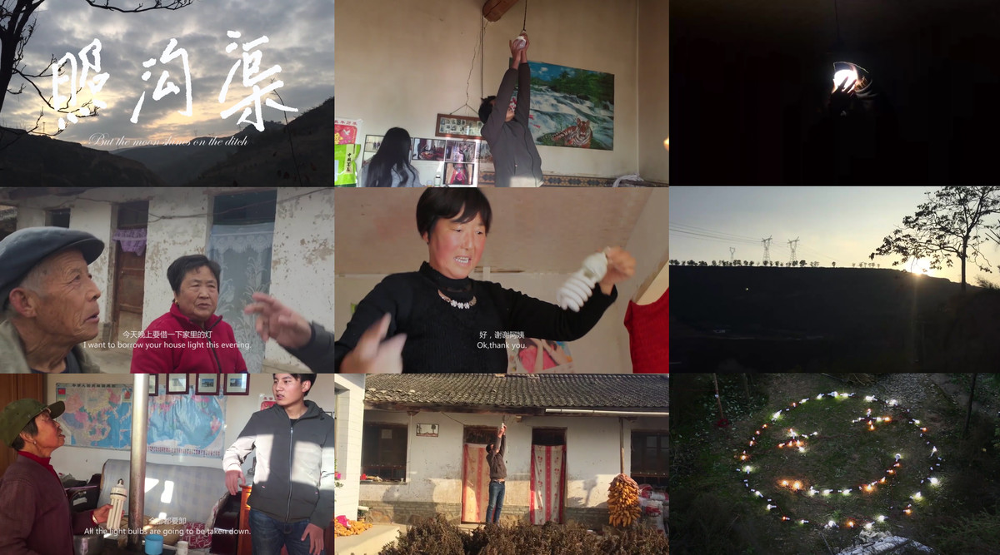
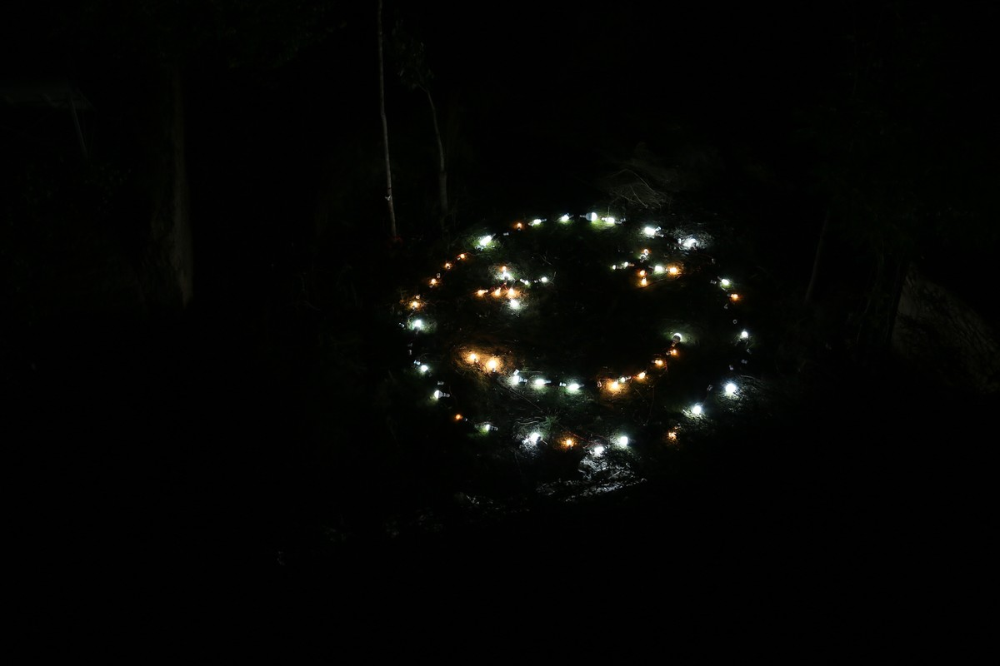
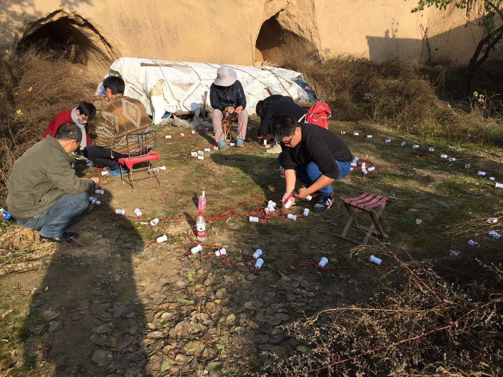
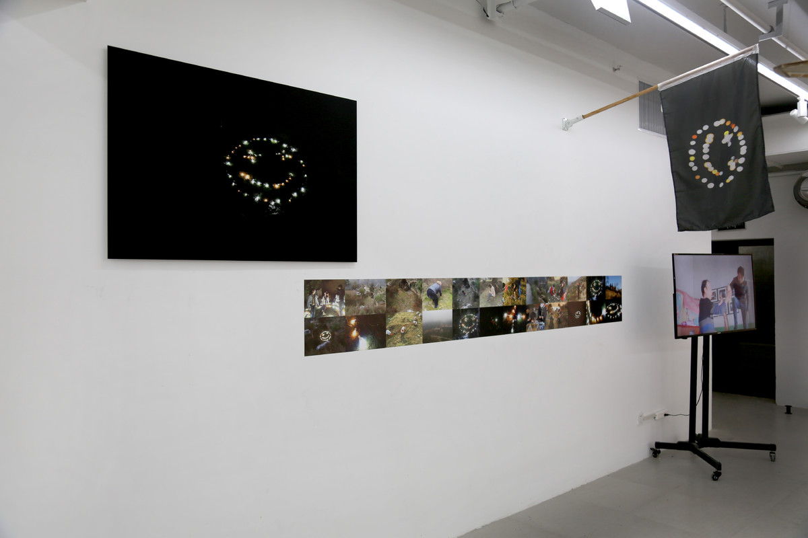

Home
Works
Curatorial & Public
Writing & Research
Bio & CV
sHI Wanwan
Artist
Home
Works
Curatorial & Public
Writing & Research
Bio & CV
照沟渠

图片，数字微喷到纯棉纸基，尺寸为120x80cm ；录像，11分钟，单屏幕彩色，有声，可变尺寸 ，2017
我本将心向明月，奈何明月照沟渠
——高明（元）《琵琶记》
2017年11月2日，艺术家在石节子村将所有村民正在使用的灯泡借过来一个晚上，在村边的山坡上组成了一个“微笑”。夜幕降临，当这个“微笑”被点亮的时候，整个村子处于一片黑暗。

作品实施现场，石节子

作品实施现场，石节子

中国美术学院美术馆，杭州